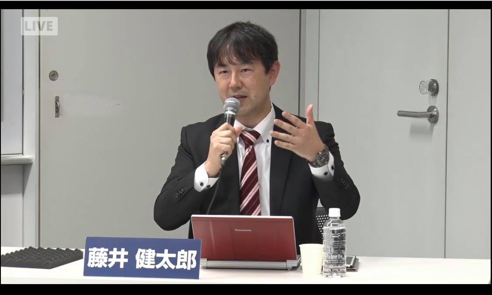

中堅・中小企業に対して
・攻め：経営ビジョン・戦略、ブランディング、マーケティング等
・守り：BCP、収益・原価・資金管理、事業承継等
財務・非財務資産をバランスよく活用した全体最適支援により事業発展を支援しています。
| OS | Windows |
|---|---|
| Tool, MiddleWare（勉強中） | Git, HTML/CSS, JavaScript, Python など |
| Web会議システム | Zoom, Microsoft Teams, Google Meet など |
| 資格・免許 | 中小企業診断士、AFP、BCAO事業継続管理者 など |
プログラミングは勉強中ですので、企業支援事例を挙げます。
連絡先や SNS のアカウントを書きましょう。
学歴、職歴、アルバイト、インターン経験など。
| 1993 年 | 愛知県立一宮高校 卒業 |
|---|---|
| 1997 年 | 南山大学法学部 法律学科 卒業 卒業 |
| 1997 年 | 愛知県名古屋市の大手会計事務所系コンサルティング会社 入社 |
| 2000 年 | 東京海上火災保険株式会社 入社 |
| 2001 年 | 保険代理店 入社 |
| 2010 年 | 株式会社ACC 設立 |
| 2014 年 | 中小企業診断士資格 取得 |
| 2026 年 | ZEN大学 知能情報社会学部知能情報社会学科 入学 |
岐阜県の企業に対して、岐阜県信用保証協会と一緒に支援した事例です。
コロナ禍で売上が激減した際に支援して、コロナ後に過去最高売上を達成して中小企業庁が毎年発行する「中小企業白書2024」に好取組事例として掲載されました。